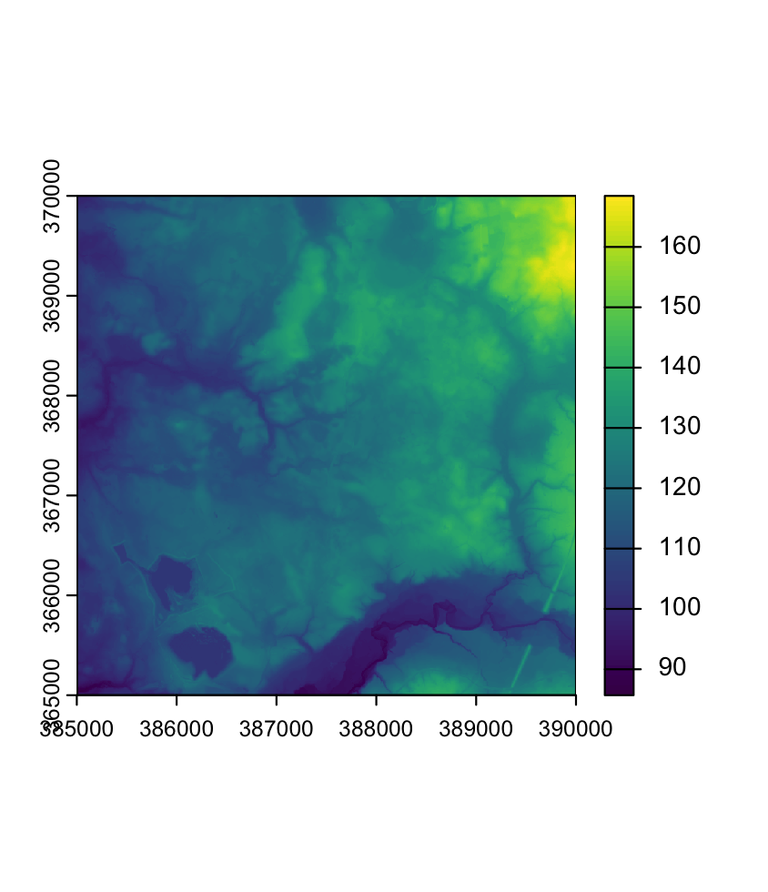
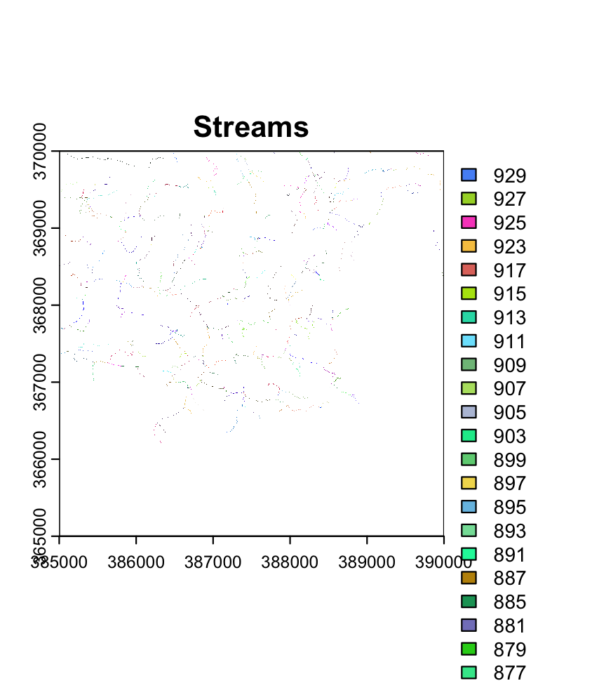
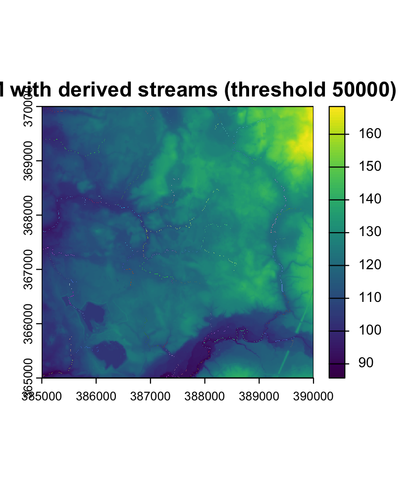
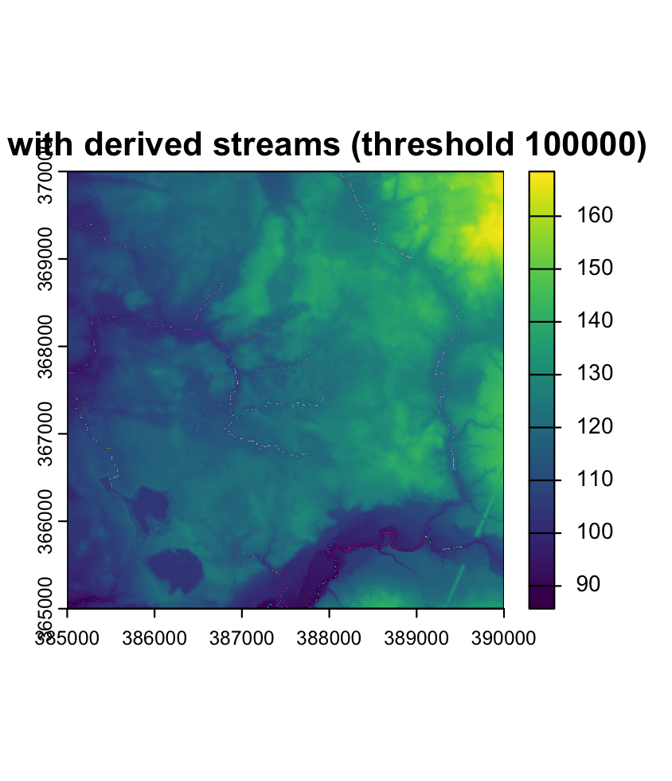
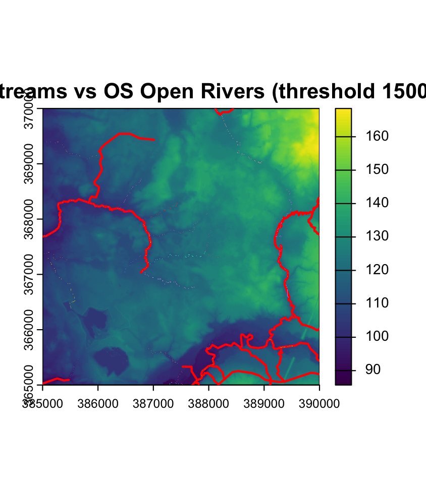

1. What Has Been Completed Done
- Data Integration: Sourced raw regional DEM tiles and reprojected all spatial data frames to standard metric coordinate system (
EPSG:27700/ British National Grid). - Bridge Environment Connected: Established communication between R and QGIS/GRASS via
qgisprocess::qgis_configure()utilizing thegrass:r.watershedalgorithm.
2. Current Task: Flow Accumulation Prototyping Active
To justify threshold selection prior to running the master batch loop, I ran a sensitivity analysis using a 50m buffer against OS Open Rivers. I benchmarked Multiple Flow Direction (MFD) against Single Flow Direction (D8) routing at a 120,000 cell threshold:
| Routing Method | Threshold (Cells) | Buffer Radius | Precision (%) | Recall (%) |
|---|---|---|---|---|
| MFD (streams5) | 120,000 | 50m | 50.4% | 51.0% |
| D8 (streams_d8) | 120,000 | 50m | 50.9% | 51.0% |
Key Insight: Changing the routing algorithm from MFD to D8 provided a negligible precision bump (50.9% vs 50.4%). The inherent ceiling limit (~51% recall) points to differences between purely topographic DEM generation and ground-surveyed river vectors, rather than threshold selection.
Diagnostic Output Visualizations
Below are the diagnostic outputs generated during the threshold prototyping and overlay evaluation:

Raw DEM Input

Extracted Streams Raster

Streams (Threshold: 5,000)

Streams (Threshold: 100,000)

OS Open Rivers Overlay (150,000)
Next Steps
- Data Filtering: Filter out estimated connector segments in the OS dataset (
fictitious == 0) to establish cleaner validation baseline. - Script Automation: Formulate the R function wrapper for
qgisprocessand initiate the processing loop over the remaining Cheshire and Greater Manchester DEM files.